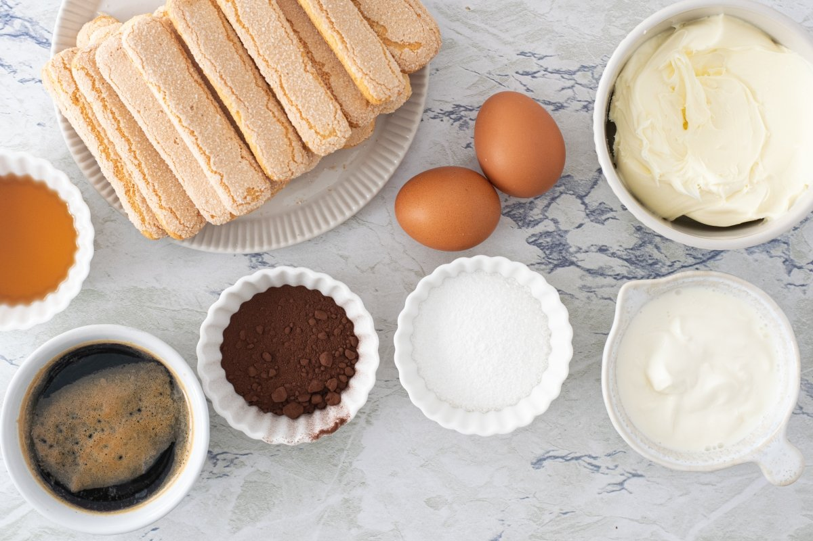

Tiramisú clásico

Ingredientes:
500 g de queso mascarpone
4 huevos
100 g de azúcar
200 g de bizcochos de soletilla
1 taza de café fuerte
50 ml de licor Amaretto
Cacao en polvo
Preparación:
Preparar la crema:
Separa las yemas de las claras. Bate las yemas con el azúcar hasta obtener una mezcla espumosa. Añade el queso mascarpone y mezcla suavemente.
SIGUIENTE PASO
VOLVER
Creador de la página web: Martín Veiga Álvarez